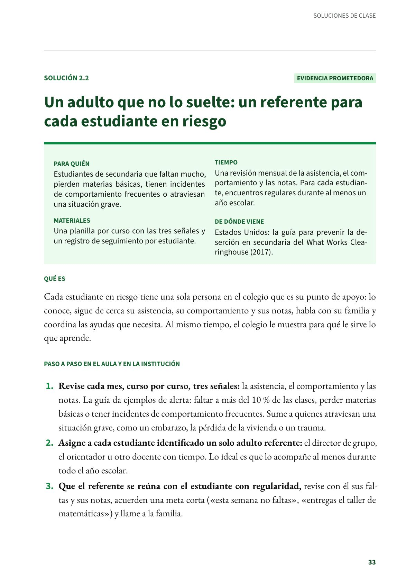
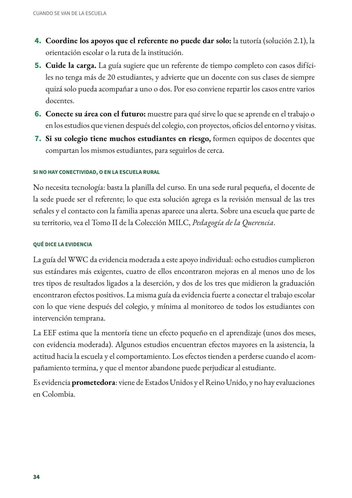
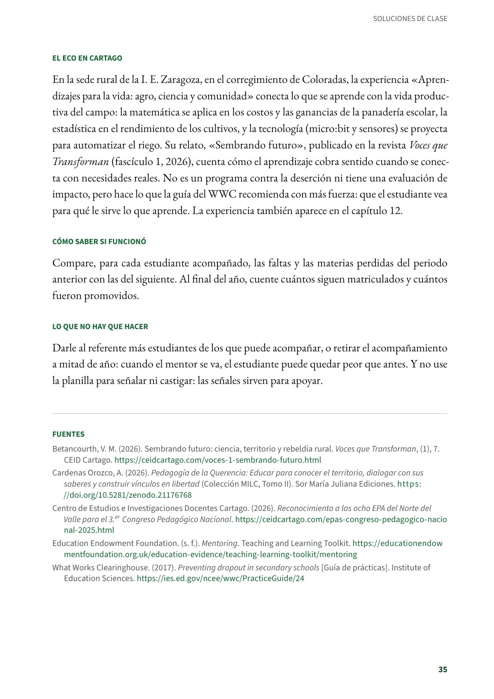
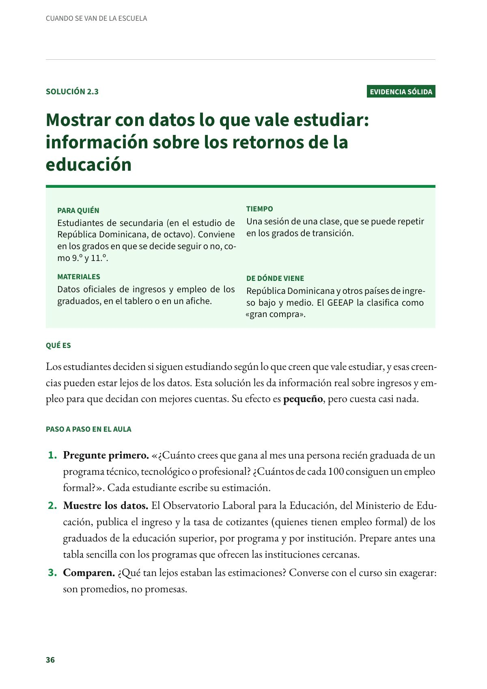

Un adulto que no lo suelte: un referente para cada estudiante en riesgo
Cada estudiante en riesgo tiene una sola persona en el colegio que es su punto de apoyo. Estudiantes de secundaria que faltan mucho, pierden materias básicas, tienen incidentes de comportamiento frecuentes o atraviesan una situación grave. Evidencia prometedora.
PDF · 4 págs. · 84 KBEn resumen
- Evidencia: prometedora.
- Para quién: Estudiantes de secundaria que faltan mucho, pierden materias básicas, tienen incidentes de comportamiento frecuentes o atraviesan una situación grave.
- Tiempo: Una revisión mensual de la asistencia, el comportamiento y las notas. Para cada estudiante, encuentros regulares durante al menos un año escolar.
- Materiales: Una planilla por curso con las tres señales y un registro de seguimiento por estudiante.
- De dónde viene: Estados Unidos: la guía para prevenir la deserción en secundaria del What Works Clearinghouse (2017).
Qué es
Cada estudiante en riesgo tiene una sola persona en el colegio que es su punto de apoyo: lo conoce, sigue de cerca su asistencia, su comportamiento y sus notas, habla con su familia y coordina las ayudas que necesita. Al mismo tiempo, el colegio le muestra para qué le sirve lo que aprende.
Paso a paso en el aula y en la institución
- Revise cada mes, curso por curso, tres señales: la asistencia, el comportamiento y las notas. La guía da ejemplos de alerta: faltar a más del 10 % de las clases, perder materias básicas o tener incidentes de comportamiento frecuentes. Sume a quienes atraviesan una situación grave, como un embarazo, la pérdida de la vivienda o un trauma.
- Asigne a cada estudiante identificado un solo adulto referente: el director de grupo, el orientador u otro docente con tiempo. Lo ideal es que lo acompañe al menos durante todo el año escolar.
- Que el referente se reúna con el estudiante con regularidad, revise con él sus faltas y sus notas, acuerden una meta corta («esta semana no faltas», «entregas el taller de matemáticas») y llame a la familia.
- Coordine los apoyos que el referente no puede dar solo: la tutoría (solución 2.1), la orientación escolar o la ruta de la institución.
- Cuide la carga. La guía sugiere que un referente de tiempo completo con casos difíciles no tenga más de 20 estudiantes, y advierte que un docente con sus clases de siempre quizá solo pueda acompañar a uno o dos. Por eso conviene repartir los casos entre varios docentes.
- Conecte su área con el futuro: muestre para qué sirve lo que se aprende en el trabajo o en los estudios que vienen después del colegio, con proyectos, oficios del entorno y visitas.
- Si su colegio tiene muchos estudiantes en riesgo, formen equipos de docentes que compartan los mismos estudiantes, para seguirlos de cerca.
Si no hay conectividad, o en la escuela rural
No necesita tecnología: basta la planilla del curso. En una sede rural pequeña, el docente de la sede puede ser el referente; lo que esta solución agrega es la revisión mensual de las tres señales y el contacto con la familia apenas aparece una alerta. Sobre una escuela que parte de su territorio, vea el Tomo II de la Colección MILC, Pedagogía de la Querencia.
Qué dice la evidencia
La guía del WWC da evidencia moderada a este apoyo individual: ocho estudios cumplieron sus estándares más exigentes, cuatro de ellos encontraron mejoras en al menos uno de los tres tipos de resultados ligados a la deserción, y dos de los tres que midieron la graduación encontraron efectos positivos. La misma guía da evidencia fuerte a conectar el trabajo escolar con lo que viene después del colegio, y mínima al monitoreo de todos los estudiantes con intervención temprana.
La EEF estima que la mentoría tiene un efecto pequeño en el aprendizaje (unos dos meses, con evidencia moderada). Algunos estudios encuentran efectos mayores en la asistencia, la actitud hacia la escuela y el comportamiento. Los efectos tienden a perderse cuando el acompañamiento termina, y que el mentor abandone puede perjudicar al estudiante.
Es evidencia prometedora: viene de Estados Unidos y el Reino Unido, y no hay evaluaciones en Colombia.
El eco en Cartago
En la sede rural de la I. E. Zaragoza, en el corregimiento de Coloradas, la experiencia «Aprendizajes para la vida: agro, ciencia y comunidad» conecta lo que se aprende con la vida productiva del campo: la matemática se aplica en los costos y las ganancias de la panadería escolar, la estadística en el rendimiento de los cultivos, y la tecnología (micro:bit y sensores) se proyecta para automatizar el riego. Su relato, «Sembrando futuro», publicado en la revista Voces que Transforman (fascículo 1, 2026), cuenta cómo el aprendizaje cobra sentido cuando se conecta con necesidades reales. No es un programa contra la deserción ni tiene una evaluación de impacto, pero hace lo que la guía del WWC recomienda con más fuerza: que el estudiante vea para qué le sirve lo que aprende. La experiencia también aparece en el capítulo 12.
Cómo saber si funcionó
Compare, para cada estudiante acompañado, las faltas y las materias perdidas del periodo anterior con las del siguiente. Al final del año, cuente cuántos siguen matriculados y cuántos fueron promovidos.
Lo que no hay que hacer
Darle al referente más estudiantes de los que puede acompañar, o retirar el acompañamiento a mitad de año: cuando el mentor se va, el estudiante puede quedar peor que antes. Y no use la planilla para señalar ni castigar: las señales sirven para apoyar.
Fuentes
Betancourth, V. M. (2026). Sembrando futuro: ciencia, territorio y rebeldía rural. Voces que Transforman, (1), 7. CEID Cartago. ceidcartago.com
Cardenas Orozco, A. (2026). Pedagogía de la Querencia: Educar para conocer el territorio, dialogar con sus saberes y construir vínculos en libertad (Colección MILC, Tomo II). Sor María Juliana Ediciones. doi.org
Centro de Estudios e Investigaciones Docentes Cartago. (2026). Reconocimiento a las ocho EPA del Norte del Valle para el 3.er Congreso Pedagógico Nacional. ceidcartago.com
Education Endowment Foundation. (s. f.). Mentoring. Teaching and Learning Toolkit. educationendowmentfoundation.org.uk
What Works Clearinghouse. (2017). Preventing dropout in secondary schools [Guía de prácticas]. Institute of Education Sciences. ies.ed.gov
Así se ve en el libro
4 páginas


